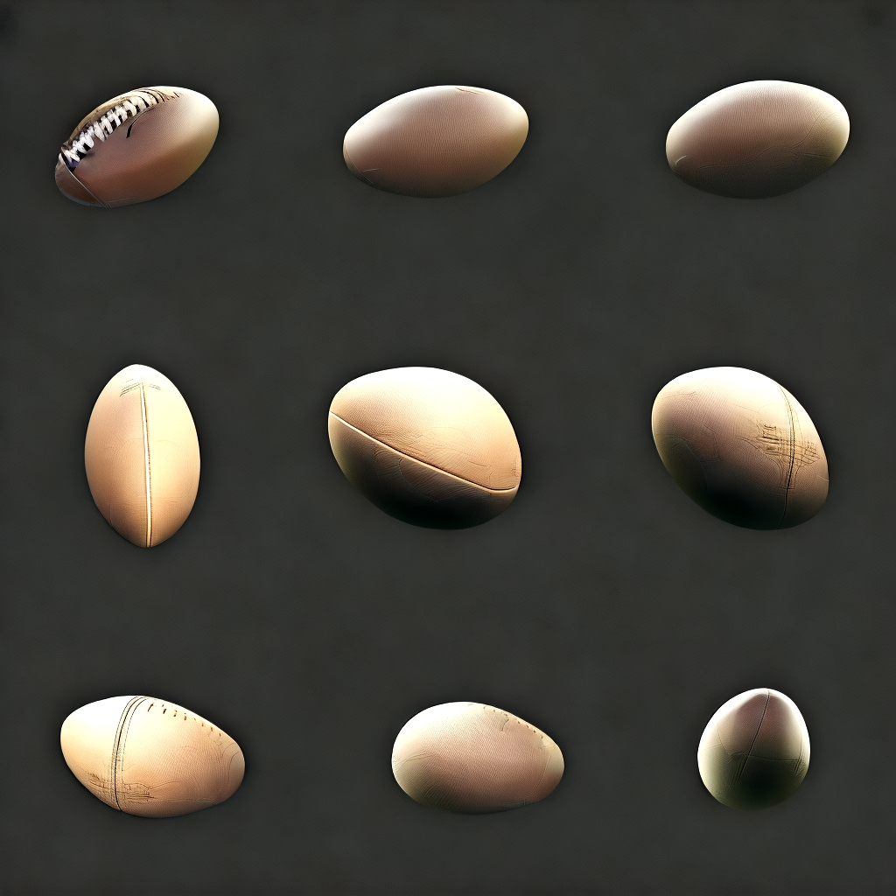

"从多个角度展示这个对象"
结果：

AiCasso中的多视图功能允许您从不同角度查看对象，通过生成图像中对象的多个视角。这对于更好地理解3D形状或展示产品特别有用。当对象没有背景时，此功能效果最佳，因此请确保去除任何干扰元素以获得最佳效果。
"从多个角度展示这个对象"
结果：以下是确保您的图像效果良好的几个提示：
就像AiCasso中的所有功能一样，您不需要过多思考——描述您想要的，AiCasso将完成繁重的工作。多视图功能非常适合产品展示、创意展示等！